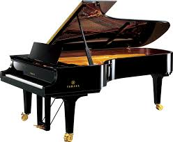

I like many instruments such as Keyboard, Guitar, Drums, and Ukulele.
Here is how the format of the list is gonna be-
So let's get on with it!😎
| Name | Image | Why I like it | More information |
|---|---|---|---|
| Keyboard/Piano |  | I like the piano as it is fun to play and is relaxing. | More information, |